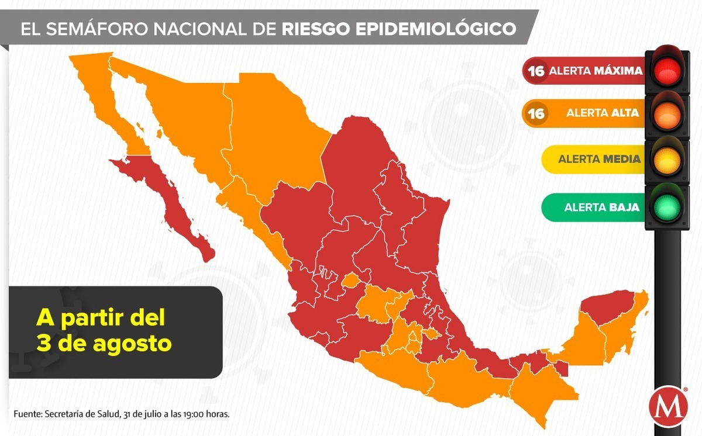

Challenge – Disease detectives: Modeling COVID-19

Imágen: Milenio
El gobierno de México tomó la medida de presentar el estado de "salud" de cada región.
Para determinar el color de cada entidad se toman en cuenta 4 rubros, los cuales son:
¿Qué indica cada color del semáforo?
Rojo:
Cuando el semáforo se encuentra en rojo, solo se permite realizar actividades que sean esenciales.
Naranja: Se permite que las empresas de las actividades económicas no esenciales trabajen con el 30% del personal para su funcionamiento, tomando las medidas de prevención y medidas de cuidado máximo para las personas más vulnerables.
Amarillo:Todas las actividades laborales están permitidas con medidas de prevención, cuidando a las personas con mayor riesgo de presentar un cuadro grave de Covid-19.
Verde:Se permiten todas las actividades, incluidas las escolares. En todos los niveles de alerta las autoridades sanitarias recomiendan mantener las medidas básicas de prevención.
Es importante recalcar que las personas que padecen enfermedades como: Hipertensión, diabetes, obesidad mórbida, insuficiencia renal, cáncer, lupus, enfermedades cárdicas y respiratorias, así como traslapes, personas adultas mayores. Deben hacer resguardo familiar en casa.
"Mientras no haya vacuna o medicamento contra el coronavirus, debemos seguir medidas de la nueva normalidad en la Ciudad de México",según la jefa de gobierno de la ciudad de México en conferencia de prensa.
Reglas del semáforo epidemiológico:
Rojo: Ocupación mayor a 65% o dos semanas de incremento estable.
Naranja: Ocupación menor a 65% y dos semanas de tendencia a la baja.
Amarillo: Ocupación menor a 50 % dos semanas de tendencia a la baja.
Verde: Ocupación menor a 50% menos un mes de ocupación estable.
En conclusión el semáforo epidemiológico es un indicador de riesgo. En verde, representa bajo riesgo; en rojo, alto riesgo y en amarillo y naranja, puntos intermedios de riesgo. El semáforo de riesgo tiene cuatro indicadores: tendencia de ocurrencia de casos, tendencia de hospitalizaciones, porcentaje de ocupación hospitalaria y detección de nuevos casos.
El Semáforo de riesgo epidemiológico es de gran importancia para transitar hacia una nueva normalidad, es un sistema de monitoreo para la regulación del uso del espacio público de acuerdo con el riesgo de contagio de COVID-19.